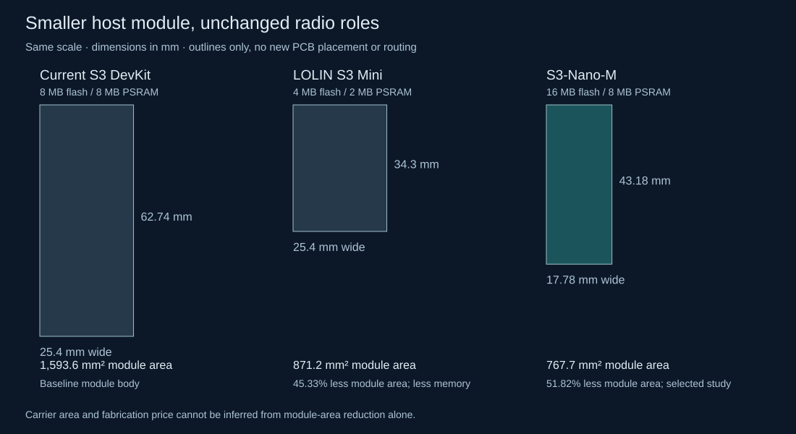
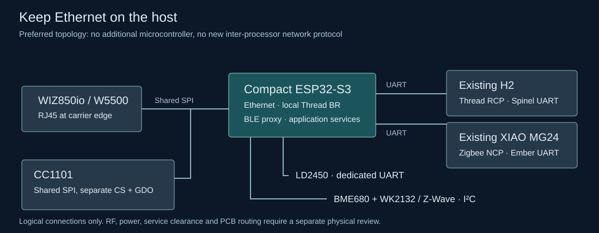

Historical design study. Its findings describe the pre-Nano revision. The selected design is now implemented in the
current MC1 carrier and firmware; use those files for construction.
Engineering review · 17 October 2026 · three independent workstreams
A smaller S3, with the same 8 MB of PSRAM.
Select the Waveshare ESP32-S3-Nano-M as the next compact-host prototype. Keep Ethernet, the local Thread border router and application services on S3; keep the existing H2 and MG24 radio roles.
The Nano-M provides factory male headers, 16 MB flash and 8 MB PSRAM in a 43.18 × 17.78 mm body. Shared SPI reduces the required application signals from 24 to 21. No Ethernet intermediary or extra processor is required.
This selects a module and implementation path, not a fabrication-ready replacement PCB. The new carrier dimensions, routing, loaded power rails, boot behavior and simultaneous radio/network performance remain to be qualified.

Manufacturer board dimensions, not a new carrier layout. Click to enlarge.Which ready-made board actually fits the assembly method?
The Nano-M uses two 15-pin rows at 2.54 mm pitch, 15.24 mm apart. Solder its factory male pins directly into the carrier. Retain the H2 and XIAO factory-pin attachment and the edge-facing WIZ850io. No female module sockets or underside signal wires are introduced.

Does an Ethernet intermediary help?
It can release host pins, but W5500, RJ45 and all three processors remain. A transparent frame transport does not remove the host’s application and network-stack memory requirements.
Distinct host application GPIO only. Excludes supply, ground, native USB and boot/reset service signals. A lower bound is not a completed pin assignment.
Shared SPI and startup constraints
ESPHome 2026.9.1 supports ethernet.spi_id on an existing hardware SPI bus. W5500 and CC1101 share clock/MOSI/MISO, but retain separate chip selects and their existing IRQ/reset/GDO signals. Normal SPI transactions are bus-locked. CC1101 performs an unguarded manual reset only during initial setup in this profile: SPI priority 1000, CC1101 priority 600, Ethernet priority 250. Do not add a runtime CC1101 reset or change that ordering without locking the complete reset sequence or stopping Ethernet first. Bench-test MISO release, startup and concurrent Ethernet/RF traffic.
Memory: capacity is not measured demand
The selected Nano preserves the existing 8 MB PSRAM capacity and increases flash from 8 MB to 16 MB. The LOLIN Mini comparison offers 4 MB flash / 2 MB PSRAM: it can carry the original two-bus pin map, but needs reduced-capacity and OTA qualification. Neither the old nor new capacity is a measurement of peak runtime use. Static RAM and image-size checks do not establish concurrent-load stability.
Implementation sequence
- Complete firmware port compiled successfully.
The isolated Nano profile maps all 21 signals, shares the existing hardware SPI bus, and retains three UARTs and all application functions. Full ESPHome 2026.9.1 / ESP-IDF 5.5.5 compilation, generated C++, runtime-source identity and both OTA partitions pass verification. Hardware operation remains untested; deployment configuration is unchanged.
- Prepare the module and carrier interface.
Measure the actual Nano-M, factory headers and underside protrusions. Provide accessible GPIO0-to-GND boot contacts and EN reset access. GPIO43 feeds H2 RX; the host resets H2 before starting Spinel. GPIO48 drives only the slow open-drain H2 BOOT line.
- Verify the power path before PCB integration.
Proposed feed: existing regulated isolated 5 V → existing branch Schottky diode → Nano VIN. Leave Nano VBUS and local 3V3 off the carrier supply rails. Its onboard USB-to-VIN diode provides the other source path. This is a schematic-level inference: the vendor labels external VIN 6–21 V although USB feeds the same buck input at a lower voltage. Measure loaded VIN, 3V3, thermal behavior and all service-power combinations before approving it.
- Repack and route one replacement carrier.
Place the smaller S3 with its ceramic antenna at an outside edge, improve H2 antenna placement, put harness connectors between modules, and keep RJ45 facing out. Account for service plugs, antenna keepouts, mounting and two-layer routing before declaring new board dimensions or cost savings.
- Qualify simultaneous operation and recovery.
Test cold boot, brownout recovery, Ethernet reconnect and OTA together with Thread traffic, three BLE connections, Zigbee, Z-Wave, radar and RF transmit/receive. Measure internal/external heap, stack margins and shared-SPI latency. Adopt the new carrier only after these checks.
What has actually been checked?
- Independent hardware and firmware reviews agree on the Nano 21-signal direct-header allocation.
- The selected map leaves GPIO0, GPIO3, GPIO46 and native USB GPIO19/20 outside the application wiring.
- Manufacturer schematic and dimensions confirm the two 15-pin rows, 2.54 mm pitch and 15.24 mm row spacing.
- Nano full build passed: 1,717,232-byte OTA image; two 8,126,464-byte app slots with 6,409,232 bytes of margin each; static RAM 161,579 bytes. Runtime peak heap has not been measured.
- Mini comparison full build passed: 1,714,976-byte OTA image; two 1,835,008-byte app slots with only 120,032 bytes of margin each; static RAM 159,259 bytes. Its 2 MB PSRAM capacity still requires runtime qualification.
- All 14 Nano verifier mutation tests pass. Generated code retains the GPIO map, three BLE connection slots, UART ownership, shared SPI and required IPv6/Thread/PSRAM settings. Runtime C/C++ sources match the existing implementation.
- No new carrier PCB has been routed or physically tested; existing MC1 checks apply only to the existing design.
Review and reproducible artifacts
Primary sources
No hardware was flashed, bought or ordered. This study did not change the then-active PCB; the later implementation is linked above.